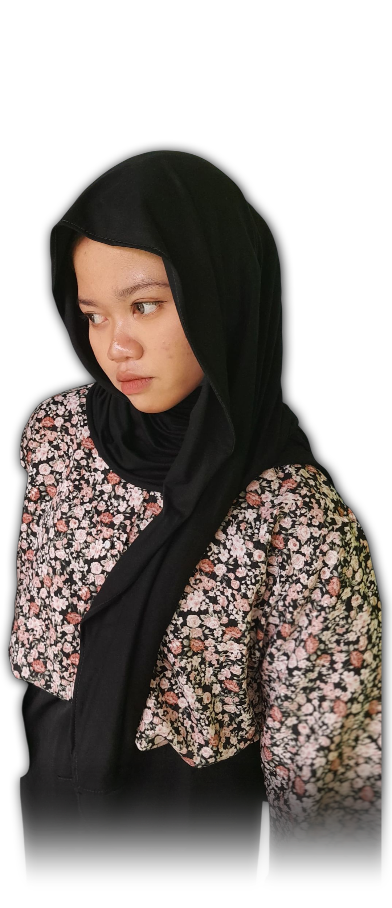

| IdunZ Website | Home | Profile | Gallery | Guest Book | Article | Contact | Login |
| Hay, aku Luqman Syahdan seorang siswa yang tertarik pada Game, Oprek dan Editing Website ini aku buat sebagai tempat untuk berbagi cerita, pengalaman belajar, dan hal-hal yang aku pelajari sepanjang perjalanan ini. |
 | ||||||